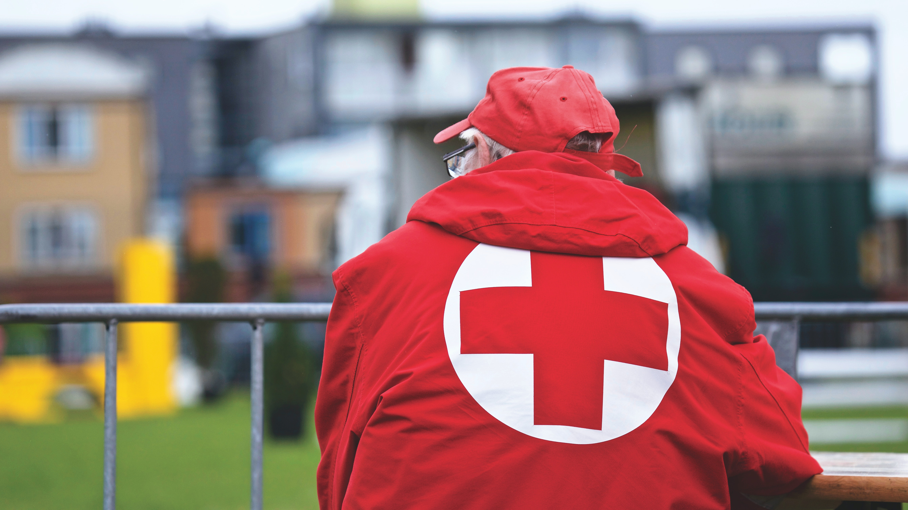

BEING PREPARED IS VITAL AT EVERY LEVEL.
Red Cross has been supporting people and communities through
disasters for more than a century. And, if there is one thing we've
learned, it's the importance of planning and preparedness. By
understanding the risks associated with natural disasters, we can
better protect ourselves, our families, and our communities.
A string of natural disasters has left many Australians feeling overwhelmed. The increased frequency and severity of these events have made recovery more difficult. Recovery doesn't happen overnight and is a long term journey that could take years
A string of natural disasters has left many Australians feeling overwhelmed. The increased frequency and severity of these events have made recovery more difficult. Recovery doesn't happen overnight and is a long term journey that could take years
A string of natural disasters has left many Australians feeling overwhelmed. The increased frequency and severity of these events have made recovery more difficult. Recovery doesn't happen overnight and is a long term journey that could take years
A string of natural disasters has left many Australians feeling overwhelmed. The increased frequency and severity of these events have made recovery more difficult. Recovery doesn't happen overnight and is a long term journey that could take years
Take our quiz today and check how well equipped your
household and community is to prepare, anticipate, respond to and recover from crises.
household and community is to prepare, anticipate, respond to and recover from crises.
8,341 people have taken the quiz!
Let’s reach 20,000!
how to prepared are you?
Required*
Country
By signing you will receive communications about how you can help with our
campaigns, on the understanding you agree to our
Terms and Conditions | Privacy Policy.
Terms and Conditions | Privacy Policy.
win a backpack
first aid kit!
first aid kit!
Red cross are often first to the scene of a disater or emergency
*Based on 2021 start
ABOUT US
Red Cross mobilises the power of humanity to bring people and
communities together in times of need.
With the support of our partner Australia Post, we're helping communities prepare for this disaster season.
With the support of our partner Australia Post, we're helping communities prepare for this disaster season.